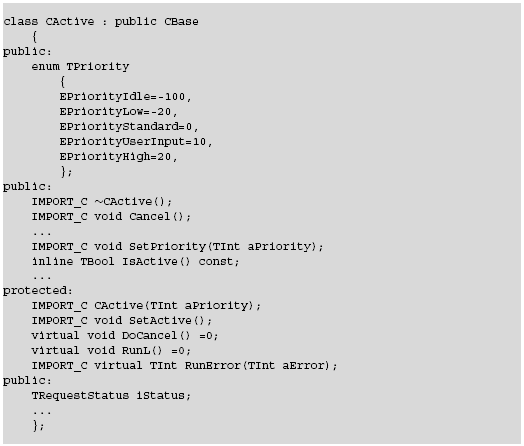
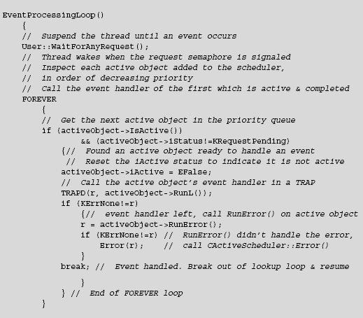
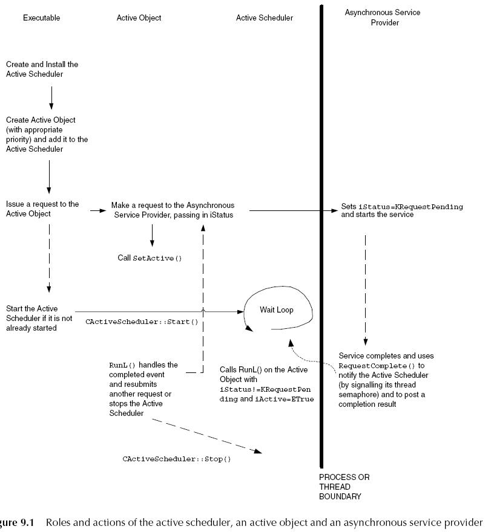

Active Objects and Event-driven Multitasking
Active objects are a fundamental part of Symbian OS.
They are designed for responsive and efficient event handling.
Before explaining active objects,
let’s consider how code actually ”runs”.
A thread is a fundamental unit of execution, which runs within a
process.
A process has its own address space and may have one or more threads
independently
executing code within it. When a process is created, a single primary
thread is
initialized within it. Other threads may then be created. Code
executing in that
process accesses "virtual memory addresses" which are mapped for that
process to
physical locations in hardware by the memory management unit.
The writable memory of one process is not normally accessible to
another process,
thus ”protecting” processes from each other. However, multiple threads
running in
the same process are not isolated from each other in the same way
because they share
the memory mapped for the process in which they run. This means that
they can access each
other’s data, which is useful, but they can also accidentally scribble
on it, which is not.
On Symbian OS, threads are scheduled pre-emptively by the kernel.
Each thread may be suspended while waiting for a given event to occur
and may resume
whenever appropriate. The kernel controls thread scheduling, allowing
the threads to
share the system resources by time-slice division, preempting the
running of a thread
if another, higher priority thread becomes eligible to run. This
constant switching of
the running thread is the basis of pre-emptive
multitasking, which allows multiple
servers and applications to run simultaneously. A context switch occurs
when the
currently running thread is suspended (for example, if it is
blocked, has reached
the end of its
time-slice, or a higher priority thread becomes ready to run) and another
thread is made current by the scheduler. The context switch incurs a
runtime overhead
in terms of the kernel scheduler and, potentially, the memory
management unit and
hardware caches, if the original and replacing threads are executing in
different processes.
On hardware running Symbian OS, resources are more limited than on a
typical desktop PC.
Thus, on Symbian OS, besides the requirements to be responsive and
handle power consumption
carefully, it is also important that the memory used by event-handling
code is minimized and
that processor resources are used efficiently. Active objects assist with
efficient programming
by providing a model for lightweight, event-driven multitasking.
Active objects encapsulate the
traditional wait loop inside a class. They were designed such
that a switch between active objects that run in the same thread incurs
a lower overhead than
a thread context switch. This makes active objects preferable for
event-driven multitasking on
Symbian OS.
On Symbian OS, active objects multitask cooperatively and,
consequently, there is no need for
synchronization protection of shared resources. In addition, because
active objects run in the
same thread, memory and objects may be shared more readily.
On Symbian OS, the use of active objects for event-handling
multitasking is ideal because they
are designed for efficiency and responsiveness. In general, a Symbian
OS application or server
will consist of a single main event-handling thread. A set of active
objects run in the thread,
each representing a task. Each active object requests an asynchronous
service, waits while it
is serviced, handles the request completion event and communicates with
other tasks as necessary.
Some events require a response within a guaranteed time, regardless of
any other activity in the
system. This is called ”real-time” event-handling. For example, a
real-time task may be required
to keep the buffer of a sound driver supplied with sound data – a delay
in response delays the
sound decoding, which results in it breaking up. Other typical
real-time requirements may be
even more strict, say for low-level telephony. These tasks have, in
effect, different requirements
for real-time responses, which can be represented by task priorities.
Higher-priority tasks must
always be able to "pre-empt"
lower-priority tasks in order to guarantee to meet their real-time
requirements. The shorter the response time required, the higher the
priority that should be
assigned to a task.
However, once an active object is handling an event, it may not be
pre-empted by the event
handler of another active object, which means that they are not
suitable for real-time tasks.
On Symbian OS, real-time tasks should be implemented using
high-priority threads and processes,
with the priorities chosen as appropriate for relative real-time
requirements.
Note: although
the active objects within a thread run cooperatively without pre-emption,
on Symbian OS the thread in which they run is scheduled pre-emptively.
Active
objects are used on Symbian OS to simplify asynchronous programming and
make it
easy for you to write code to submit asynchronous requests, manage
their completion events
and process the result. They are well suited for lightweight
event-driven programming,
except
where a real-time, guaranteed response is required.
How Active Objects work
A typical Symbian OS application or server consists of a single
event-handling thread
running a scheduler (the ”active scheduler”) which coordinates one or
more active objects.
Each active object requests an asynchronous service and handles the
resulting completion
event some time after the request. It also provides a way to cancel an
outstanding request
and may provide error handling for exceptional conditions.
How to work with Active Objects
An active object class must derive from class CActive, which is defined
in "e32base.h" .
-A derivate from this class must call "CActiveScheduler::Add()" in its
constructor,
to be added to the active scheduler.
-A derivate from this class must implement RunL() in oder to be able to
handle events.
-A derivate from this class must always call Cancel() in the destructor
to terminate any
outstanding requests.
Here are the most importand methods.

Threads Without an Active Scheduler
Most threads running on Symbian OS have an active scheduler, which is
usually created
implicitly by a framework (e.g. CONE for the GUI framework). However,
if you are
implementing a server, you have to create and start an active scheduler
explicitly
before you can use active objects. Likewise, console-based test code
may not use active
objects directly itself, but must create an active scheduler in its
main thread if it
depends on components which do use active objects.
More details on Active Objects
Here about the responsibilities of active objects, asynchronous service
providers and the active scheduler
and hoe they fit together.
(o) Symbian OS event-handling is usually managed in one thread, which
runs a single active scheduler.
(o) The active scheduler holds a set of active objects for that thread,
each of which encapsulates
an associated asynchronous service provider.
(o) Each thread has an associated request semaphore; when an
asynchronous function completes, it
generates an event by calling "RequestComplete()" on
the requesting thread, which signals its
semaphore and is detected by the active scheduler.
(o) The active scheduler calls the "RunL()" event handler method of the
active object associated
with the completion event.
Active obect encapsulates asynchronous functions. Asynchronous
functions can be identified as those
taking a "TRequestStatus"
reference parameter into which the request completion status is posted.
An object implementing such methods is usually known as an asynchronous service provider.
A typical active object class provides public ”request issuing” methods
for its clients to
submit asynchronous requests. These pass on the requests to the
encapsulated asynchronous service
provider, passing by reference the iStatus
member variable of the CActive class as the
TRequestStatus parameter.
Having issued the request, the issuer method must call CActive::SetActive()
to set the iActive member to
indicate that there is an outstanding request.
The service provider must set the value of the incoming TRequestStatus
to KRequestPending (=0x80000001)
before acting on the request. Upon completion, if the service provider
is in the same thread as the
requester, it calls User::RequestComplete(), passing the TRequestStatus
and a completion result,
typically one of the standard errors such as KErrNone or KErrNotFound,
to indicate the success
or otherwise of the request. User::RequestComplete() sets the value of
TRequestStatus and generates
a completion event in the requesting thread by signaling the thread’s
request semaphore. If the
asynchronous service provider and the requester are in separate
threads, the service provider must
use an RThread object, representing a handle to the requesting thread,
to complete the request.
It should call RThread::RequestComplete() to post the completion code
and notify the request semaphore.
While the request is outstanding, the requesting thread runs in the
active scheduler’s event
processing loop. When it is not handling completion events, the active
scheduler suspends
the thread by calling User::WaitForAnyRequest(), which waits on a
signal to the thread’s request
semaphore. When the asynchronous service provider completes a request,
it signals the semaphore
of the requesting thread as described above, and the active scheduler
determines which active
object should handle the completed request. It uses its
priority-ordered list of active objects,
inspecting each one in turn to determine whether it has a request
outstanding. It does so by
checking the iActive flag; if the object does indeed have an
outstanding request, it then inspects
its TRequestStatus member variable to see if it is set to a value other
than KRequestPending.
If so, this indicates that the active object is associated with a
request that has completed
and that its event handler code should be called. Having found a
suitable active object,
the active scheduler clears the active object’s iActive flag and calls
its RunL() event handler.
This method handles the event and may, for example, resubmit a request
or generate an event
on another object in the system. While this method is running, other
events may be generated but
RunL() is not pre-empted – itruns to completion before the active
scheduler resumes control and
determines whether any other requests have completed. Once the RunL()
call has finished, the
active scheduler re-enters the event processing wait loop by issuing
another
User::WaitForAnyRequest() call. This checks the request semaphore and
either suspends the thread
(if no other requests have completed in the meantime) or returns
immediately (if the semaphore
indicates that other events were generated while the previous event
handler was running) so the
scheduler can repeat active object lookup and event handling.

An active object’s priority is only an
indication of the order in
which the active scheduler performs
lookup and event-handling. It
does not reflect an ability to
pre-empt other active objects.
